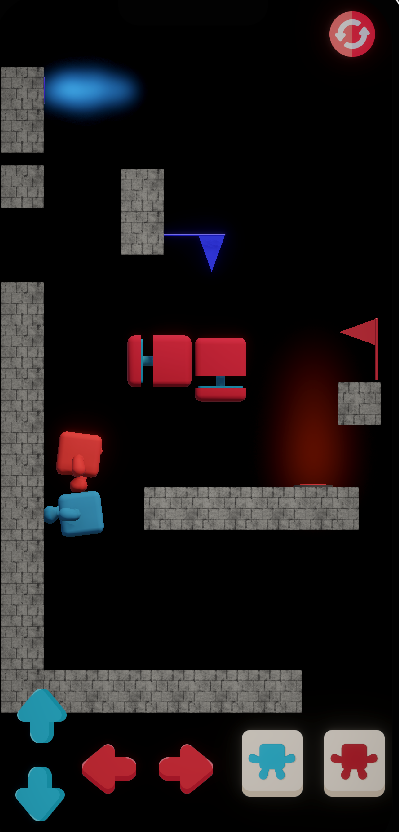
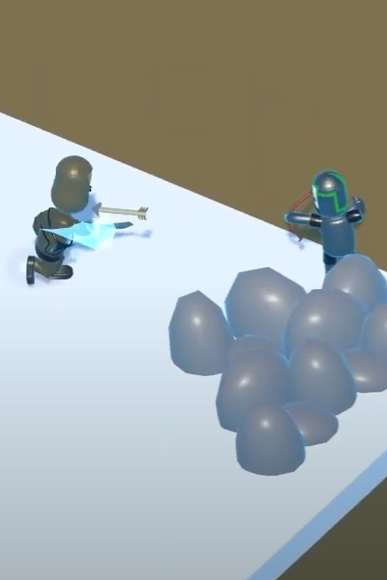
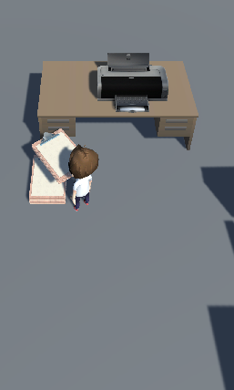
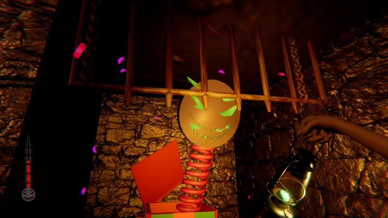
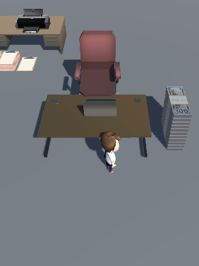

Oyun Geliştirme Portfolyom

2Sides
Bitirme projem olan 2Sides oyununda farklı yer çekimlerine sahip iki karakter, engelleri aşarak kendi renklerindeki bayraklara ulaşmaya çalışmaktadır.
GitHub Projesi
Yitik Adaletin Yolcuları
Game Jam kapsamında ekip olarak geliştirdiğimiz izometrik oyun. Kelebek etkisi teması üzerine oluşturulmuştur.
Oynanış VideosuGitHub Projesi

Ammo Push Clone
Unity kullanılarak geliştirilmiş hyper-casual türünde bir prototip projedir. Oyuncu, ilerleyerek topladığı mühimmatlarla engelleri ve düşmanları aşmaya çalışır.
GitHub Projesi
The Sweet Price Of Laughter
Global Game Jam 2024 için “Make Me Laugh” temasıyla geliştirdiğimiz oyun. Bulmaca, kaçış ve atmosfer odaklı bir oyun deneyimi sunmaktadır.
Oynanış Videosu
Idle Office
Idle türünde geliştirdiğim klon projede dosya taşıma, para kazanma, sekreter kiralama ve ilerleme mekanikleri bulunmaktadır.

Cover Gold Car
Gold Miner’dan ilham alan bu projede maden arabasını düşmanlardan koruyarak altın toplama ve geliştirme mekanikleri bulunmaktadır.